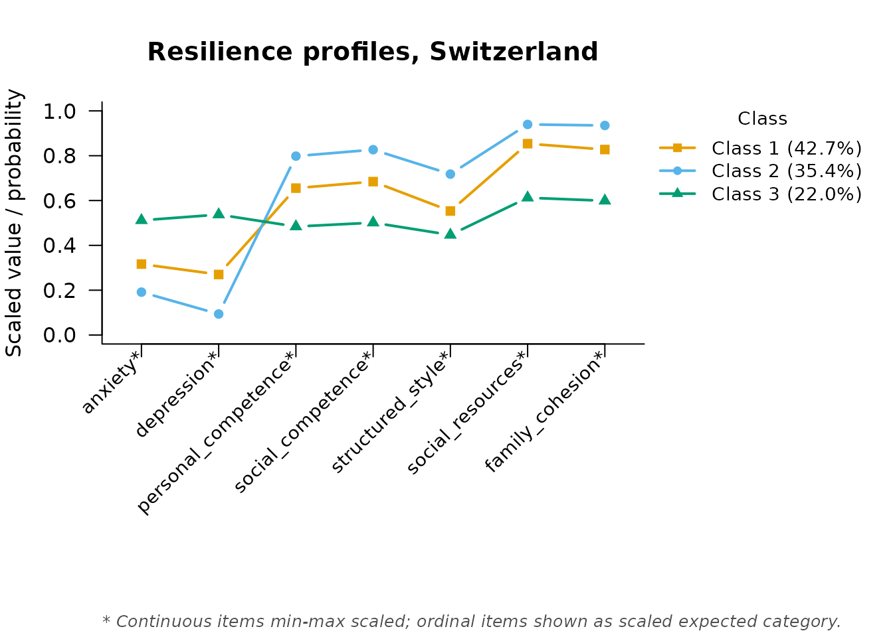

Resilience Profiles Across Countries: Multi-Group LPA and Measurement Invariance
Source:vignettes/janousch.Rmd
janousch.RmdBackground
This vignette walks through Janousch et al. (2022), “Resilience
Profiles Across Context: A Latent Profile Analysis in a German, Greek,
and Swiss Sample of Adolescents,” PLOS ONE, 17(1):e0263089 (https://doi.org/10.1371/journal.pone.0263089), using the
janousch dataset bundled with mixtureEM
(?janousch; CC BY 4.0, figshare).
The study measured 1,160 seventh-graders from Germany, Greece, and Switzerland on two symptom indicators (anxiety, depression) and five protective-factor subscales from the Resilience Scale for Adolescents (personal competence, social competence, structured style, social resources, family cohesion). It then asked two questions we replicate here: (1) how many resilience profiles best describe each country’s data, and (2) are those profiles measurement-invariant across countries — that is, do the same profile labels mean the same thing (the same underlying symptom/protective-factor levels) in each country?
The original analysis handled the substantial item-level missingness
with a full-information ML estimator rather than deleting incomplete
cases, and so do we — without having to ask for it.
fit_mixture() detects the missing values and models them
directly; measurement = "continuous" is all that is needed.
In practical terms: instead of dropping an adolescent who skipped one
item — which is what listwise deletion, the default in many packages,
would do — the model uses every answer that adolescent did
give.
The data
data(janousch)
str(janousch)
#> 'data.frame': 1160 obs. of 11 variables:
#> $ country : Factor w/ 3 levels "Switzerland",..: 1 1 1 1 1 1 1 1 1 1 ...
#> $ gender : Factor w/ 3 levels "Male","Female",..: 1 1 2 1 2 1 2 2 1 2 ...
#> $ age : num 13 14 13 13 12 13 13 13 13 13 ...
#> $ migration_background: Factor w/ 2 levels "Native","Migration background": 1 2 2 2 2 2 2 1 2 2 ...
#> $ anxiety : num 1.9 1.6 2.1 1.8 NA 1.2 2.6 1.7 1.3 1.5 ...
#> $ depression : num 2.21 1 1.93 1.79 1.43 ...
#> $ personal_competence : num 3 4.88 3.25 4.12 4.12 ...
#> $ social_competence : num 2.2 4.2 4.2 4.2 3.8 4.8 3.8 3.6 3.6 4 ...
#> $ structured_style : num 3.75 4.25 4 2.75 3.75 4.25 3 3 4.25 2.25 ...
#> $ social_resources : num 3.4 5 4.4 4 5 5 4 4 4.8 4.8 ...
#> $ family_cohesion : num 2.33 5 4.5 4.67 4.83 ...
items <- c("anxiety", "depression", "personal_competence", "social_competence",
"structured_style", "social_resources", "family_cohesion")Per-country profiles
The paper fit a separate LPA for each country and selected, by BIC
and interpretability, 3 profiles for Switzerland and 4 for Germany and
Greece. Finding the best solution in a model with missing continuous
indicators benefits from many random restarts (the paper itself used up
to 2,000); we use a more modest n_init here for speed, but
recommend increasing it for a real analysis.
set.seed(1)
fit_ch <- fit_mixture(janousch[janousch$country == "Switzerland", items],
n_classes = 3, measurement = "continuous",
n_init = 30, max_iter = 2000)
#> Warning: 14 cases had no observed value on any indicator and were removed
#> before estimation (n = 361 analysed). Rows: 28, 46, 50, 55, 90, 94, ... (8
#> more).
class_sizes(fit_ch)
#> class proportion n_expected n_modal
#> 1 1 0.4267885 154.07065 153
#> 2 2 0.3535393 127.62768 132
#> 3 3 0.2196722 79.30167 76This closely recovers the paper’s Swiss solution (Non-Resilient
22.1%, Moderately Resilient 42.9%, Untroubled 34.9%). What the profiles
mean comes from the class-specific indicator means, which
measurement_summary() prints and also returns as a data
frame:
profile_ch <- measurement_summary(fit_ch)
#> =========================================================
#> MEASUREMENT MODEL PARAMETERS
#> =========================================================
#>
#> CONTINUOUS MEANS
#> Indicator | Class 1 | Class 2 | Class 3
#> --------------------------------------------------
#> anxiety | 1.949 | 1.574 | 2.535
#> depression | 1.791 | 1.274 | 2.574
#> personal_competence | 3.837 | 4.319 | 3.258
#> social_competence | 3.990 | 4.446 | 3.404
#> structured_style | 3.548 | 4.083 | 3.201
#> social_resources | 4.561 | 4.819 | 3.838
#> family_cohesion | 4.368 | 4.762 | 3.529
#>
#> Missing data: 143 of 2527 cells (5.7%) across 7 items, handled via FIML (MAR assumption).
#> =========================================================Profiles are easier to name than to read off a table, so plot them.
plot() puts every indicator on a common 0–1 axis
(continuous items are min–max scaled against their observed range, which
is what the * marks), so the shape of each line —
high on the protective factors, low on the symptoms, or the reverse — is
what you interpret:
plot(fit_ch, main = "Resilience profiles, Switzerland")
Once you have decided what each line represents, read the profile
means off profile_ch to fix the class order, then pass your
own names in that order through class_labels = c(...); the
legend will carry them, with each class’s size attached. Those names —
“Non-Resilient”, “Moderately Resilient”, “Untroubled” — are the paper’s,
and this plot is how they were arrived at.
set.seed(1)
fit_de <- fit_mixture(janousch[janousch$country == "Germany", items],
n_classes = 4, measurement = "continuous",
n_init = 30, max_iter = 2000)
#> Warning: 4 cases had no observed value on any indicator and were removed before
#> estimation (n = 342 analysed). Rows: 43, 113, 269, 322.
class_sizes(fit_de)
#> class proportion n_expected n_modal
#> 1 1 0.4362630 149.20196 149
#> 2 2 0.2785360 95.25930 100
#> 3 3 0.1552926 53.11006 51
#> 4 4 0.1299084 44.42868 42This closely recovers the paper’s German solution (Non-Resilient 15.7%, Moderately Resilient 44.2%, Untroubled 27.3%, Resilient 12.7%).
set.seed(1)
fit_gr0 <- fit_mixture(janousch[janousch$country == "Greece", items],
n_classes = 4, measurement = "continuous",
n_init = 30, max_iter = 2000)
#> Warning: 17 cases had no observed value on any indicator and were removed
#> before estimation (n = 422 analysed). Rows: 7, 41, 129, 132, 148, 166, ... (11
#> more).
#> Warning: A class variance has collapsed towards zero: social_resources in class
#> 3 (variance 0.00111 vs 0.348 for the item overall; class mean at a data
#> boundary). The likelihood of a mixture of normals is unbounded in this
#> direction, so this solution can score better than any meaningful one while
#> describing a handful of near-identical cases rather than a subgroup. Do not
#> interpret it as it stands, and do not compare its BIC with a clean fit's -- it
#> is inflated by the spike. This is not a convergence failure, so raising n_init
#> will not fix it and can make it worse. Three ways out, to choose between on
#> substantive grounds: (1) hold each item's variance equal across classes with
#> variances_equal = TRUE, which bounds the likelihood so the problem cannot
#> arise; (2) fit fewer classes, since a class describing a spike rather than a
#> subgroup usually means the data do not support this many; or (3) keep the model
#> and strengthen the prior with bayes_constants = list(variances = 4) -- roughly
#> one artificial observation per class -- doubling it if the warning persists.
#> Then check that the flagged variance is no longer far below the others and that
#> its class mean has come off the floor or ceiling, and look at the distribution
#> of the named item for the floor, ceiling or spike the class latched onto.That fit raises a warning: one class’s variance on
social_resources has collapsed towards zero. The next
section explains what that means and why it happens; the short version
is that a mixture of normals with freely estimated variances has an
unbounded likelihood, so a class can score well by sitting on a
handful of identical answers instead of describing a subgroup. In survey
terms this is usually a ceiling or floor effect: when a
large block of respondents picks the very top of the
social_resources scale, the model can manufacture a
“profile” out of those identical scores alone. Such a solution is not
interpretable, and — importantly — more random starts will not rescue
it.
If your variance collapses
- Read the warning. It names the item and the class (here,
social_resourcesin one of the four Greek classes) and suggests a starting value.- Look at that item. A histogram usually shows the culprit: a heavy pile of responses on the highest or lowest scale point.
- Raise the prior, not
n_init. Start at the suggestedbayes_constants = list(variances = ...)and increase it a little at a time until the warning goes away.- Re-run every model you intend to compare at the same value, so the fits stay on a common footing.
The remedy is that stronger prior holding the variances away from
zero. It is best read as a gentle statement of disbelief that any real
subgroup has exactly zero spread: variances = 5 adds the
equivalent of five hypothetical observations, spread across the classes,
whose only job is to smooth the mathematical spike away. The warning
suggests a starting point of one artificial observation per class —
variances = 4 for this four-class model — and says to raise
it if the warning persists, which on this data it does. A little more is
enough:
set.seed(1)
fit_gr <- fit_mixture(janousch[janousch$country == "Greece", items],
n_classes = 4, measurement = "continuous",
n_init = 30, max_iter = 2000,
bayes_constants = list(variances = 5))
#> Warning: 17 cases had no observed value on any indicator and were removed
#> before estimation (n = 422 analysed). Rows: 7, 41, 129, 132, 148, 166, ... (11
#> more).
class_sizes(fit_gr)
#> class proportion n_expected n_modal
#> 1 1 0.3119837 131.65711 138
#> 2 2 0.2562406 108.13353 110
#> 3 3 0.2435750 102.78863 97
#> 4 4 0.1882008 79.42073 77Even with a clean fit, the Greek class sizes differ more noticeably from the paper’s (Non-Resilient 21.0%, Moderately Resilient 30.8%, Untroubled 24.9%, Resilient 23.3%) than the Swiss and German ones did. The Greek sample had the lowest entropy in the original study (.788, vs. .81-.84 for the other two countries), meaning its classes are less well separated — exactly the situation where an LPA’s likelihood surface has several close local optima and different software can land on distinct, similarly plausible solutions. Two different things are at work here and they call for different responses: local optima are a search problem, answered by more random starts, and the printed “best solution found by k of n starts” line tells you whether you have enough; a collapsed variance is not a search problem at all, and more starts make it worse.
Testing measurement invariance across countries
Before we can say “Greece has more Resilient adolescents than Germany”, we have to establish that being Resilient means the same thing in both places. If the profile means differ by country, the labels are attached to different underlying patterns and the comparison is apples to oranges. That is the question measurement invariance answers, and it is worth settling before any cross-country claim goes into a manuscript.
Rather than three separate models, mixtureEM can fit all three countries jointly as a multiple-group model, and ask directly whether a profile means the same thing in each. Fitting the same number of classes (4, following the paper’s own supplementary invariance analysis, which tested the four-profile solution across all three countries), the comparison is between two nested models:
| Model | Profile means | Indicator variances | Class sizes | Arguments |
|---|---|---|---|---|
| Invariant | pooled | pooled | free by country | group_effects = "prevalence" |
| Non-invariant | free by country | pooled | free by country |
group_effects = "both",
group_invariant_params = "covariances"
|
Measurement invariance is the restriction that a profile sits at the same place on every indicator in every country. Freeing the means by country is what breaks it; the indicator variances stay pooled in both models, because they describe how tightly people cluster around a profile rather than where the profile is, and holding them equal is what keeps the comparison a test of the profiles themselves. This is the standard latent-profile invariance comparison (Olivera-Aguilar & Rikoon, 2018), and it is also the smaller and better-behaved of the models available: a fully heterogeneous alternative, which frees the variances by country as well, is fitted at the end of this section for comparison.
Let us fit the restricted model first, exactly as one would by default:
fit_invariant <- fit_mixture(janousch[items], n_classes = 4,
measurement = "continuous",
group = janousch$country,
group_effects = "prevalence",
n_steps = 1, n_init = 50, max_iter = 2000,
random_state = 11)
#> Warning: 35 cases had no observed value on any indicator and were removed
#> before estimation (n = 1125 analysed). Rows: 28, 46, 50, 55, 90, 94, ... (29
#> more).
#> Warning: A class variance has collapsed towards zero: social_resources in class
#> 2 (variance 0.000304 vs 0.357 for the item overall; class mean at a data
#> boundary). The likelihood of a mixture of normals is unbounded in this
#> direction, so this solution can score better than any meaningful one while
#> describing a handful of near-identical cases rather than a subgroup. Do not
#> interpret it as it stands, and do not compare its BIC with a clean fit's -- it
#> is inflated by the spike. This is not a convergence failure, so raising n_init
#> will not fix it and can make it worse. Three ways out, to choose between on
#> substantive grounds: (1) hold each item's variance equal across classes with
#> variances_equal = TRUE, which bounds the likelihood so the problem cannot
#> arise; (2) fit fewer classes, since a class describing a spike rather than a
#> subgroup usually means the data do not support this many; or (3) keep the model
#> and strengthen the prior with bayes_constants = list(variances = 4) -- roughly
#> one artificial observation per class -- doubling it if the warning persists.
#> Then check that the flagged variance is no longer far below the others and that
#> its class mean has come off the floor or ceiling, and look at the distribution
#> of the named item for the floor, ceiling or spike the class latched onto.That fit raises the same warning the Greek model did: one class’s
variance on social_resources has collapsed
towards zero, with the class mean sitting exactly at the top of the
scale.
This is worth understanding rather than working around, because it is
a property of the model and not a bug in the data. A mixture of normals
with freely estimated variances has an unbounded likelihood:
take any class, shrink its variance on one item towards zero, and put
its mean on a few cases that happen to share a value, and the density at
those cases — and so the likelihood — grows without limit. Such a
solution can score better than any meaningful one while describing
nothing but a clump of identical answers. Here, enough adolescents
report the maximum on social_resources that a class can
form on the ceiling alone.
Two practical consequences follow, and both cut against instinct.
Raising n_init does not help: the
likelihood really is unbounded in that direction, so a longer search
finds a taller spike and reports a better log-likelihood for a worse
solution. And a flagged fit’s BIC cannot be compared with a clean one’s,
because it is inflated by that spike.
mixtureEM guards against this with a weak prior that holds variances away from zero. The default is deliberately mild, and as the Greek fit showed, mild enough that it does not prevent every collapse — its job is to keep the problem finite and visible, so the warning can name the item and the class, which it does. The remedy is the same stronger prior, at the same strength the Greek fit needed:
fit_invariant <- fit_mixture(janousch[items], n_classes = 4,
measurement = "continuous",
group = janousch$country,
group_effects = "prevalence",
n_steps = 1, n_init = 50, max_iter = 2000,
random_state = 11,
bayes_constants = list(variances = 5))
#> Warning: 35 cases had no observed value on any indicator and were removed
#> before estimation (n = 1125 analysed). Rows: 28, 46, 50, 55, 90, 94, ... (29
#> more).
fit_free_means <- fit_mixture(janousch[items], n_classes = 4,
measurement = "continuous",
group = janousch$country,
group_effects = "both",
group_invariant_params = "covariances",
n_steps = 1, n_init = 50, max_iter = 2000,
random_state = 11,
bayes_constants = list(variances = 5))
#> Warning: 35 cases had no observed value on any indicator and were removed
#> before estimation (n = 1125 analysed). Rows: 28, 46, 50, 55, 90, 94, ... (29
#> more).
lr_test(fit_invariant, fit_free_means)
#>
#> Likelihood-ratio test for nested models
#> ---------------------------------------------------------
#> Restricted : LL = -5338.3248 parameters = 65
#> Full : LL = -5261.3503 parameters = 121
#> -2 x diff : 153.9490 df = 56 p = 4.446e-11
#> The restriction is rejected: the full model fits significantly better.Both fits are now clean — no collapsed variances in either — and the restriction is decisively rejected: forcing the same profile means across countries fits significantly worse than letting each country have its own. This matches the paper’s own conclusion (“Measurement invariance did not hold across the three countries”) — the same four profile labels (Non-Resilient, Moderately Resilient, Untroubled, Resilient) do not correspond to the same underlying levels of symptoms and protective factors in each country.
For the write-up, that has a concrete consequence: report and interpret the profiles separately within each country, and do not pool the three samples or compare profile prevalences across them as if the labels were interchangeable. A statement like “the Untroubled profile is more common in Greece than in Germany” is not supported by these data, because “Untroubled” is not the same profile in the two countries.
One caution about the comparison itself: bayes_constants
was raised on both models, which is what makes them comparable.
A likelihood-ratio test between two fits estimated under different
priors is not a test of anything.
If you also want the variances to differ
group_invariant_params = "covariances" is what holds the
indicator variances pooled while the means move. Dropping it frees
everything about the measurement model, giving each country its own
profile means and its own variances:
fit_configural <- fit_mixture(janousch[items], n_classes = 4,
measurement = "continuous",
group = janousch$country,
group_effects = "both",
n_steps = 1, n_init = 50, max_iter = 2000,
random_state = 11,
bayes_constants = list(variances = 5))
#> Warning: 35 cases had no observed value on any indicator and were removed
#> before estimation (n = 1125 analysed). Rows: 28, 46, 50, 55, 90, 94, ... (29
#> more).
lr_test(fit_invariant, fit_configural)
#>
#> Likelihood-ratio test for nested models
#> ---------------------------------------------------------
#> Restricted : LL = -5338.3248 parameters = 65
#> Full : LL = -5191.4948 parameters = 177
#> -2 x diff : 293.6599 df = 112 p = < 1e-16
#> The restriction is rejected: the full model fits significantly better.This rejects too, and by more, but it is answering a broader question — “is anything about the measurement model different across countries?” rather than “do the profiles sit in the same place?” — on twice the degrees of freedom. Report it when heterogeneity of spread is itself of interest; otherwise the means-only test above is the one that matches the substantive claim.
It is also the harder model to fit: 177 parameters spread across
three country-specific blocks, which random starting values struggle to
bring into correspondence. mixtureEM warm-starts it from the per-country
solutions to help, but a larger n_init may still improve
it, which would make the statistic larger and the rejection stronger,
not weaker. lr_test() warns if the search has gone badly
enough to make the full model score below the restricted
one.
Covariates: gender and migration background
The paper related class membership to gender and migration background
using Mplus’s R3STEP procedure — itself already a 3-step,
classification- uncertainty-aware approach (equivalent to mixtureEM’s
correction = "ML"). We reproduce the same kind of analysis
for Switzerland, where the paper reported no significant covariate
effects, as a check:
The Swiss model was already fit above, so
add_covariates() runs the three-step analysis on that exact
solution — no re-specification and no re-estimation of the measurement
model:
ch <- janousch[janousch$country == "Switzerland", ]
fit_ch_cov <- add_covariates(fit_ch, ch[, c("gender", "migration_background")])
#> Using 'ML' bias correction (set `correction` to override).
#> prepare_covariates: dropped 1 unused level of 'gender'.
#> 14 case(s) had been removed at fitting time for having no observed indicator; the matching rows of `predictors` were dropped.
summary(fit_ch_cov)
#> =========================================================
#> STRUCTURAL MODEL SUMMARY
#> =========================================================
#>
#> CATEGORICAL LATENT VARIABLE REGRESSION (CLASS PREDICTORS)
#> Reference Class: 1
#> Standard errors: Bakk-Oberski-Vermunt corrected (robust step 3, hessian step 1)
#> ---------------------------------------------------------
#> OR [95% CI] P-Value
#>
#> Class 2 ON
#> Intercept 0.866 [ 0.465, 1.611] 0.649
#> gender.Female 1.138 [ 0.656, 1.972] 0.646
#> migratn_bckgrnd.Mgrtnbckgrnd 0.870 [ 0.467, 1.620] 0.661
#>
#> Class 3 ON
#> Intercept 0.479 [ 0.223, 1.028] 0.059
#> gender.Female 1.171 [ 0.629, 2.183] 0.618
#> migratn_bckgrnd.Mgrtnbckgrnd 0.995 [ 0.457, 2.167] 0.990
#> Abbreviated names:
#> migratn_bckgrnd.Mgrtnbckgrnd = migration_background.Migration background
#>
#> OMNIBUS TEST PER COVARIATE (effect across all classes)
#> ---------------------------------------------------------
#> Wald Chi2 df P-Value
#> gender 0.311 2 0.856
#> migration_background 0.251 2 0.882
#> Note: a non-significant test beside large coefficients can be the
#> Hauck-Donner effect; confirm with wald_omnibus_test().
#> =========================================================Each row is one predictor level in one contrast: the class named in
the header versus the reference class (Class 1). The odds ratio says how
the odds of falling in that class rather than the reference change for
that level of the predictor, holding the other covariates fixed. A
gender.Female row with an odds ratio near 1 and a p-value
far above .05 therefore reads as: girls are no more or less likely than
boys to land in that profile rather than the reference one. Values above
1 favour the named class, values below 1 favour the reference class, and
only the p-value tells you whether the difference is distinguishable
from none — an odds ratio of 1.5 on a p of .6 is not evidence of
anything.
One detail worth noticing: the full dataset codes gender
with three levels, but no Swiss adolescent chose “Other”, so after
subsetting that level is empty. mixtureEM drops empty levels
automatically (with a message) rather than printing a degenerate
coefficient row for a category with no data — and it warns when an
observed level rests on only a handful of cases, whose odds
ratio would be unstable.
References
Janousch, C., Anyan, F., Kassis, W., Morote, R., Hjemdal, O., Sidler, P., Graf, U., Rietz, C., Chouvati, R., & Govaris, C. (2022). Resilience profiles across context: A latent profile analysis in a German, Greek, and Swiss sample of adolescents. PLOS ONE, 17(1), e0263089. https://doi.org/10.1371/journal.pone.0263089
Olivera-Aguilar, M., & Rikoon, S. H. (2018). Assessing measurement invariance in multiple-group latent profile analysis. Structural Equation Modeling, 25(3), 439–452. https://doi.org/10.1080/10705511.2017.1408015